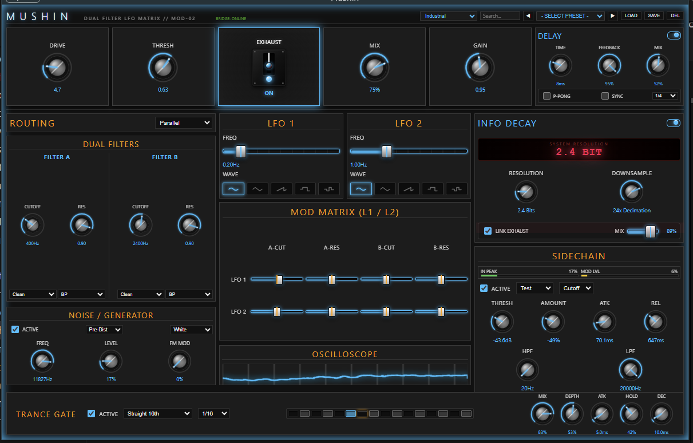

A surgical signal corruptor built for producers who are done tweaking. Stop overthinking. Start shaping.
Mushin (無心) is the Japanese Zen concept of "no-mind"—the state of peak flow where actions occur seamlessly without hesitation, doubt, or overthinking. In modern music production, infinite possibilities breed ultimate hesitation.
Mushin strips away the tedious micro-tuning. Every parameter is curated, highly expressive, and deliberate. Built on the Shokunin artisan ethos, Mushin has opinions so you don't need them. Make bold creative choices in seconds.
No submenus. No endless matrix modulation configurations. One surface designed to keep you in the flow zone.
High-fidelity State-Variable Filters, zero-delay feedback algorithms, and surgical waveshaping combined for pure character.
Information decay (bitcrushing) and transient exhaustion models shape signals, turning noise into a vibrant performance dynamic.
An optimized workflow built with pristine high-performance DSP engines.
Dynamic soft-saturation blending into a harsh odd-order Hard Clip Exhaustion mode when pushed over the threshold limits.
Configure dual state-variable filters in parallel or serial. Tweak standard LFO frequencies and route depths instantly.
Dynamically scale signal fidelity down to 2-bit. Generates crisp, musical digital artifacts that cut through complex mixes.
Tempo-synced gating matrix with precise attack, hold, and decay controls to carve complex rhythmic shapes.
Duck drive levels, cutoffs, or output amplitudes dynamically using highly-configurable sidechain tracking curves.
Stunning responsive layout built with HTML/CSS/JS, driven directly by JUCE's high-speed C++ engine at 30Hz.

"The signal enters as raw input. The S-Curve waveshaper applies trend-exhaustion saturation. The dual filters execute structural choke. Information decays under quantization step-reduction. What emerges is the clean truth of the sound—stripped of generic noise, heavy with character."
Start experimenting with physical signal exhaustion physics today. Free VST3 and Standalone formats are compiled for immediate deployment.